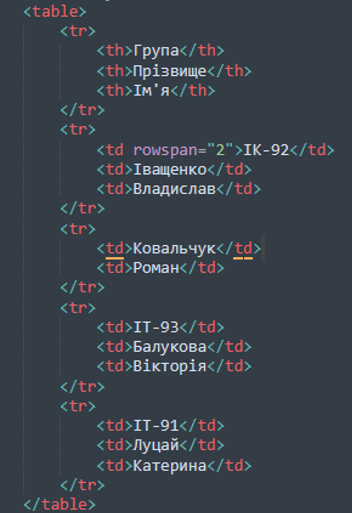
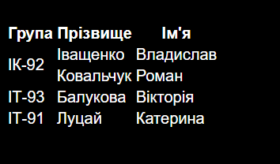

HTML код таблиці:

Результат:

Теорія:
Опис:
Елемент "table" служить контейнером для елементів, що визначають вміст таблиці. Будь-яка таблиця складається з рядків і осередків, які задаються за допомогою тегів "tr" і "td" . Усередині "table" допустимо використовувати наступні елементи: "caption" , "col", "colgroup", "tbody", "td", "tfoot", "th", "thead" і "tr"
- align - Визначає вирівнювання таблиці.
- background - Задає фоновий малюнок у таблиці.
- bgcolor - Колір фону таблиці.
- border - Товщина рамки в пікселях.
- bordercolor - Колір рамки.
- cellpadding - Відступ від рамки до вмісту осередку.
- cellpacing - Відстань між осередками.
- cols - Число колонок в таблиці.
- frame - Повідомляє браузеру, як відображати межі навколо таблиці.
- height -Висота таблиці.
- rules - Повідомляє браузеру, де відображати кордону між осередками.
- summary - Повідомляє браузеру, де відображати кордону між осередками.
- width - Ширина таблиці.